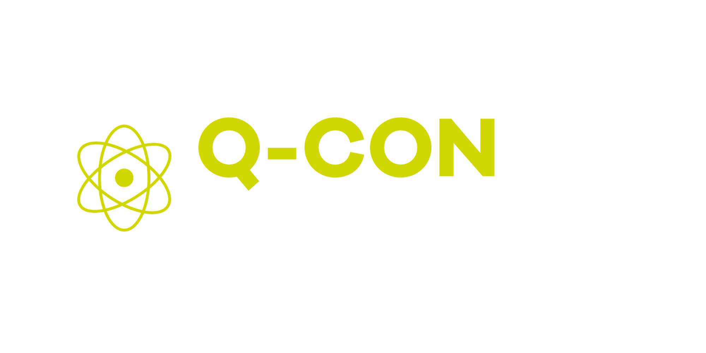
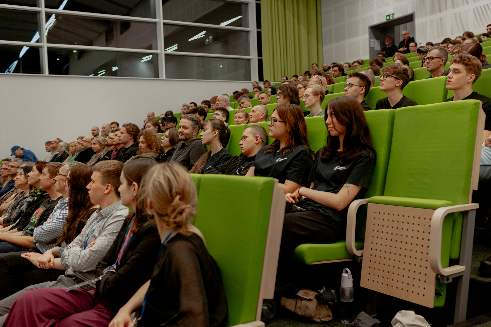
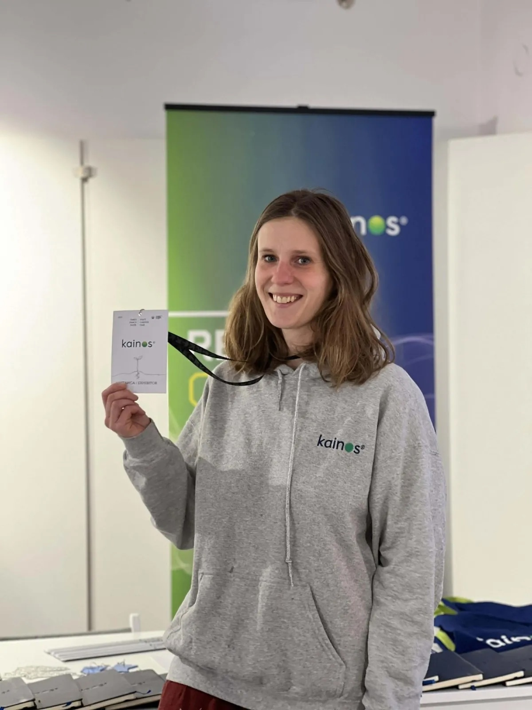
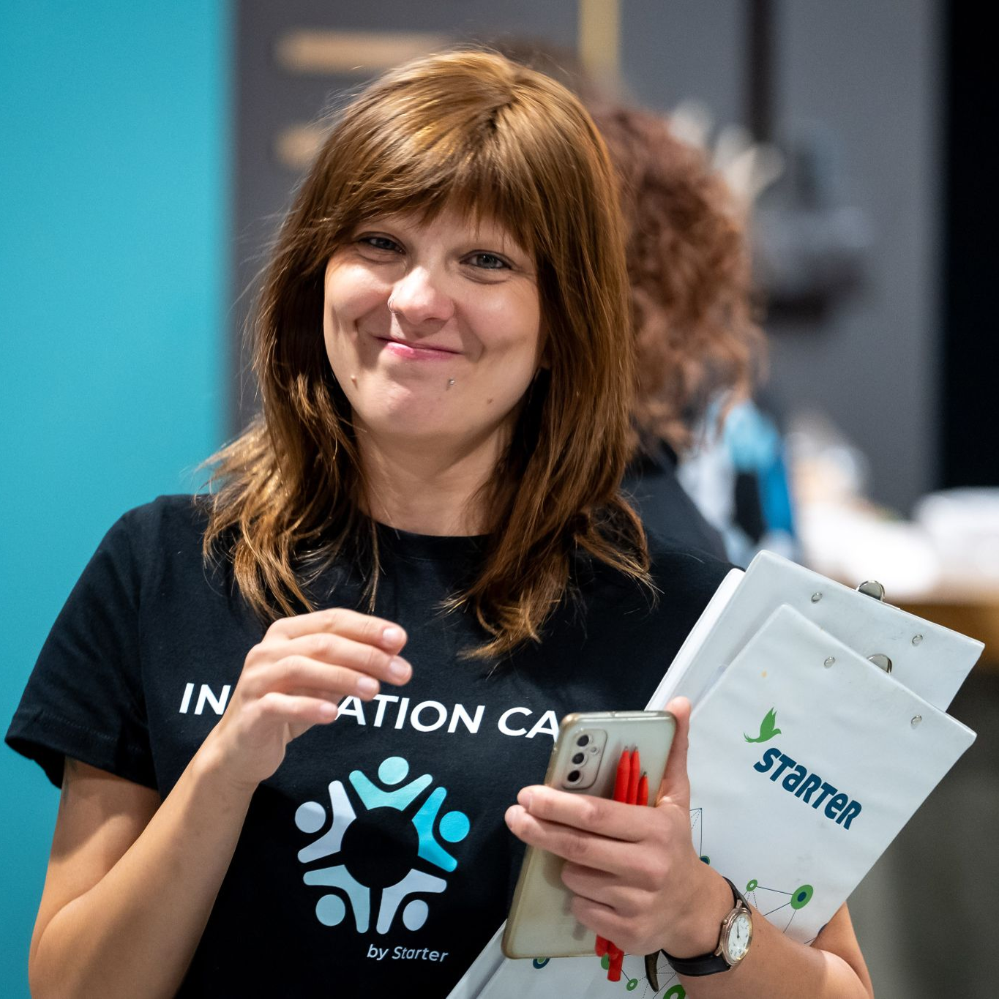

Wspierają nas


Patronat / Partnerzy merytoryczni:


Oficjalne wydarzenie towarzyszące międzynarodowej konferencji:

10 września 2026 | Wydział MFI UG
Dzień przed startem międzynarodowej konferencji technologicznej Q-Con, otwieramy drzwi naszego Wydziału dla młodych pasjonatów. Dołącz do wyjątkowego dnia pełnego interaktywnych odkryć!
Dni
Godzin
Minut
Sekund
Darmowe wydarzenie skierowane głównie do uczniów szkół ponadpodstawowych i klas 7-8 szkoły podstawowej,
ale otwarte dla wszystkich pasjonatów nauki!
...jak działają algorytmy na TikToku, które tak bezbłędnie dobierają dla Ciebie kolejne filmy? Chcesz wiedzieć, jak matematyka pomaga tworzyć ulubione gry wideo, albo jaka fizyka kryje się w Twoim smartfonie?
Chcemy Wam udowodnić, że nauki ścisłe to nie suche regułki z podręczników, ale fascynujące mechanizmy, z którymi macie do czynienia każdego dnia!
Technologia nie ma płci! Chcemy pokazać młodym kobietom, że przedmioty ścisłe to ich przestrzeń – miejsce, w którym mogą realizować swoje najśmielsze ambicje i realnie zmieniać naszą codzienność.

Tak wyglądała inauguracja naszego cyklu! Dołącz do setek pasjonatów.
Królestwo nauk ścisłych
Dowiedz się więcej o IT!
Rozwój Osobisty i Startupy
Praktyczne Bootcampy dla przyszłych programistów
Hackathon Skills ze STARTERem
English Track
Strefa Kół Naukowych
Strefa Relaksu i Rozmów
Zdobywaj nowe umiejętności w mniejszych grupach.
Oprócz pokazów i wykładów w strefach głównych, przygotowaliśmy dla Was specjalne bloki warsztatowe prowadzone przez naszych partnerów merytorycznych. Tematyka będzie bardzo zróżnicowana – od kompetencji miękkich i pracy w zespole, po zagadnienia typowo technologiczne.
Experyment Gdynia
10:15 - 11:15Martyna Pieczka
11:30 - 12:15Ogłoszenie wkrótce...
12:15 - 13:30Ogłoszenie wkrótce...
10:15 - 11:00Maja Zontek
11:10 - 11:55Ala Rudnicka
12:05 - 12:50Krzysztof Świątek
10:15 - 11:00Więcej wkrótce...
11:10 - 13:30Agnieszka Hanna Gorlak
10:15 - 11:00Więcej wkrótce...
11:10 - 13:30Ogłoszenie wkrótce...
10:15 - 11:45Ogłoszenie wkrótce...
11:55 - 13:30Ogłoszenie wkrótce...
10:15 - 11:45Ogłoszenie wkrótce...
12:00 - 13:30Prezentacje projektów Kół Naukowych

Kainos
Eventre
RSS MFI UG
Kainos
Kainos

STARTER Gdańsk
RSS MFI UG / Dziewczyny do ścisłych
Zabierz swoją klasę na niezwykłą lekcję poza murami szkoły. Oferujemy możliwość zgłoszeń grupowych, dzięki którym cała Twoja klasa będzie mogła wspólnie wziąć udział w wykładach i zarezerwować miejsca na dedykowanych warsztatach.
Zgłoś Grupę Szkolną

Patronat / Partnerzy merytoryczni:


Oficjalne wydarzenie towarzyszące międzynarodowej konferencji:

Wydarzenie skierowane jest głównie do uczniów liceów oraz klas 7-8 szkoły podstawowej, ponieważ zależy nam na inspirowaniu młodzieży przed wyborem ścieżki kariery lub studiów. Jednakże nasze drzwi są otwarte dla wszystkich! Niezależnie od tego, czy jesteś studentem, nauczycielem, czy po prostu pasjonatem technologii – zapraszamy, każdy znajdzie tu coś fascynującego.
Nie, udział w wydarzeniu aMFIteatr Nauki jest całkowicie bezpłatny. Obowiązuje jednak wcześniejsza rejestracja ze względu na ograniczoną liczbę miejsc w salach i na warsztatach.
Nie! Warsztaty to idealna okazja do poznania nowych osób. Będziemy pracować w grupach, które uformują się naturalnie na miejscu, a jednym z elementów szkolenia będzie właśnie szybki teambuilding.
Tak, budynek Wydziału Matematyki, Fizyki i Informatyki UG jest w pełni przystosowany do potrzeb osób z niepełnosprawnościami ruchowymi (brak progów, obszerne windy, podjazdy oraz dedykowane toalety).
ul. Wita Stwosza 57
80-308 Gdańsk
🚆 SKM: Przystanek Gdańsk Przymorze-Uniwersytet (10 minut spacerem).
🚋 Tramwaj: Linie: 5, 6, 12 - przystanek Uniwersytet Gdański
🚗 Parking: Wjazd na teren kampusu UG dla gości zewnętrznych jest niemożliwy, polecamy skorzystanie z komunikacji miejskiej.
Rejestracja otwarta